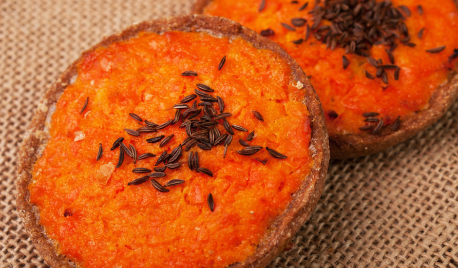

Sklandrausis

Description
Sklandrausis is a sweet pie yellowish-orange in color from the carrots
used for the filling. The base is made from a firm rye flour dough.
Once rolled out, circles of dough, 8-14 cm diameter, are cut out and
the edges are folded upwards.
The base is then filled with boiled potato and carrot filling, potato
on the bottom and carrot on top. A layer of cream, cinnamon, or caraway
seeds is then spread on top. The flavor of the sklandrausis can range
from sweet to very sweet, dominated by carrot, while the pastry base
has a very distinct flavor.
Ingredients
- 400g rye flour
- 100g butter
- 1 cup warm water
- 1/2 teaspoon salt
- 7 medium carrots
- 2 tablespoon salt
- 2 tablespoons sour cream
- 1 egg
- 2 medium potatoes
- 100ml milk
- 25g butter
Steps
-
Peel the carrots, cut in quarters, place in a medium saucepan, cover
with water and boil until tender.
-
Peel the potatoes, cut in quarters, place in a separate saucepan,
cover with water and boil until tender.
-
While the vegetables are boiling, prepare the dough. Dissolve the salt
and sugar in the water. Mix the flour with softened butter and add the
water, stir well to form dough. Knead the dough for 5 to 7 minutes
until the dough is soft enough to be rolled.
-
Preheat the oven to 200 degrees. Roll the dough 3-5 mm thick. Use a 8
cm cookie cutter to cut out 15 discs. Fold 1cm of the edges up to form
pastry cases. Place the cases on a baking tray lined with baking paper.
-
Prepare the filling. Drain the carrots and place in a food processor.
Add honey, egg and sour cream and process for 20 seconds. Drain the
potatoes, mash until smooth, add milk and butter and stir until well
combined.
-
To fill the pastry cases, spread 1 teaspoon of mashed potatoes, top
with a tablespoon of processed carrots. Repeat until all cases have
been filled.
-
Place the baking tray in the oven and bake for 15-20 minutes until the
pastry has cooked and the filling turns slightly golden.